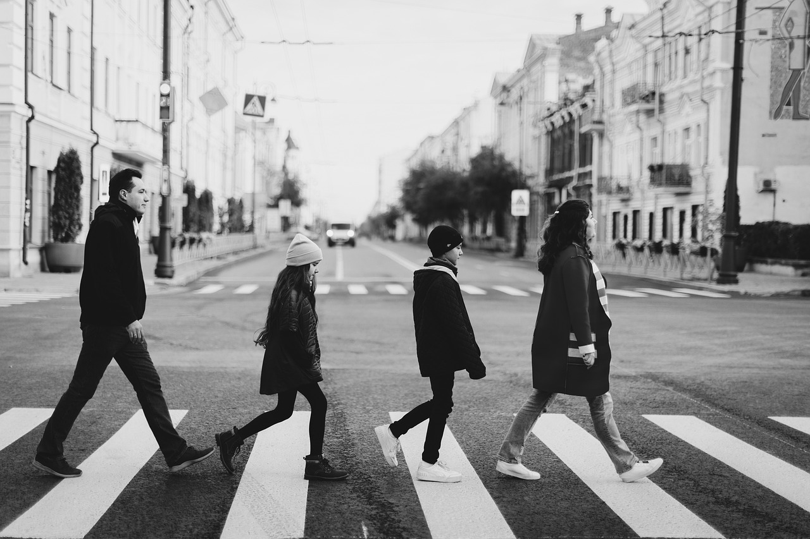

yaşıyor, zevk ediniyor,
bazılarını paylaşıyor

Her insanın hayatında bazı sabitler vardır. Kimisi için bu bir şehir, kimisi için bir müzik, kimisi
içinse bir anıdır. Ama çoğu zaman, bu sabitlerin en güçlü ve en derin olanı ailesidir. Çünkü aile,
sadece dünyaya geldiğimiz yer değil; aynı zamanda kim olduğumuzu şekillendiren, bizi biz yapan
değerlerin doğduğu yerdir.
Çocukken belki farkında değildik, ama büyüdükçe hayatın ne kadar karmaşık, ne kadar yorucu ve hatta ne
kadar yalnızlaştırıcı olduğunu gördükçe, o sıcak yuvayı, çocuklukta sarıldığımız güveni, aileyle
geçirilen sıradan bir akşamı bile özlemle anmaya başladık. Çünkü zamanla anladık ki; dışarıdaki dünya ne
kadar büyürse büyüsün, kalbin daraldığında döneceğin en samimi yer ailenin yanıdır.
Ailenin Görünmeyen Gücü
Aile, çoğu zaman gözle görünmeyen ama tüm hayatımıza sirayet eden bir güçtür. Belki fiziksel olarak bir
arada olmayabiliriz. Farklı şehirlerde yaşıyor olabiliriz, hatta bazen birbirimizle konuşmadığımız
zamanlar da olur. Ama ne olursa olsun, bir bağ vardır içimizde. Aniden gelen bir kötü haberle yüreğimiz
ağzımıza gelir, bir tebessümle içimiz ısınır. Çünkü aile, ruhumuzun en derin katmanlarına kadar işlemiş
bir aidiyet duygusudur.
Bu bağ, sadece kan bağıyla oluşmaz. Bazen seni büyüten bir teyzen, seni koruyan bir dede, dertlerini
dinleyen bir abla da senin ailendir. Aile dediğimiz şey, aynı çatı altında yaşamak değil; aynı duyguda,
aynı sevgide buluşmaktır aslında.
Hayatın İçindeki Rolü
Hayat, her zaman bize beklediğimizi vermez. Sınavlar zor geçer, arkadaşlıklar bitebilir, hayal
kırıklıkları
yaşanabilir. Ama o anlarda insanın en çok ihtiyaç duyduğu şey, sığınılacak bir limandır. Aile işte tam
da bu
noktada devreye girer. Sana yargılamadan bakan bir çift göz, yalnızca iyi olduğun zaman değil;
düştüğünde de
yanında olan bir eldir. Seni sen olduğun için seven, eksiklerinle birlikte kabul eden bir kalptir aile.
Yıllar geçtikçe, çocukken anlam veremediğimiz bazı sözlerin ne kadar değerli olduğunu anlıyoruz.
Annemizin
“Yarın ne olacağı belli olmaz” sözü, babamızın “Kolay yoldan gitme” nasihati, kardeşimizin “Ben
yanındayım”
fısıltısı... Hepsi birer yol gösterici oluyor bize. Çünkü aileden gelen her kelime, aslında hayatta
önümüzü
aydınlatan bir fenerdir.
Modern Hayatta Aileyle Uzaklaşmak
Modern çağın getirileriyle birlikte bireysellik ön plana çıktı. Kendi ayaklarımız üzerinde durmak,
kendimize bir hayat kurmak, bağımsız olmak… Bunlar elbette ki güzel hedefler. Ama bu süreçte fark
etmeden en çok ihmal ettiğimiz şey ailemiz oluyor. “Yarın ararım”, “Zaten konuşacak bir şey yok”, “Onlar
da beni arasın” gibi bahanelerle iletişimi azaltıyor; oysa farkında olmadan en kıymetli zamanları
kaçırıyoruz.
Bir gün dönüp de telefonda son konuşmayı dinlemek, eski bir fotoğrafın anlamını ağlayarak kavramak
istemiyorsak, aileyle geçirilen vakti hiçbir şeyle kıyaslamamamız gerekiyor. Çünkü giden zaman geri
gelmiyor, eksilen birinin yeri hiçbir zaman tam anlamıyla dolmuyor.

Duygusal Derinlik
Bir Sandığın İçine Saklı Hatıralar
Bazen bir evin en köşesinde duran eski bir sandık, bazen bir annenin yaptığı reçelin kokusu, bazen de
babanın sabah işe giderken giydiği mont… Hepsi birer anı aslında. Farkında olmadan içimize işlemiş olan,
her hatırladığımızda içimizi burkan ya da gülümseten değerler... İşte bu yüzden aile, sadece bugün
değil, geçmişin de taşıyıcısıdır. Aile, çocukken düşüp dizimizi kanattığımızda başımızı okşayan,
ergenlikte yanlış yaptığımızda bile bizi affeden, gençlikte yanımızda yürüyen o gizli kahramanlardır.
Bazı insanlar çok erken yaşta ailesiz kalır, bazıları ise ailesi yanında olduğu hâlde o sıcaklığı hiç
hissedemez. Bu yüzden sahip olunan aile bir şanstır, bir lütuftur. Ne kadar küçük ya da eksik olursa
olsun, içinde sevgi barındıran her bağ çok değerlidir.
Zaman, kimseye torpil geçmiyor. Annemiz bir gün yaşlanıyor, babamız artık eskisi kadar güçlü görünmüyor.
Kardeşimiz çocukluktaki gibi bizimle oyun oynamıyor. Ama hâlâ birlikteyken yapabileceğimiz çok şey var.
Bugün anneni aramak için güzel bir gün. Belki babana “Seni seviyorum” demenin tam zamanı. Kardeşinle
yıllar sonra bir çocukluk anısını konuşmak, birlikte eski bir filmi izlemek, eski fotoğraflara bakarken
gözlerin dolması... Bunların hepsi iyileştirici, hayatı daha yaşanır kılan anlar.
Unutma: Aile, hayatta sadece bir defa inşa edilen bir yuvadır. Değerini bil, kırmadan, kırılmadan sev.
Çünkü bir gün gerçekten çok geç olabilir...